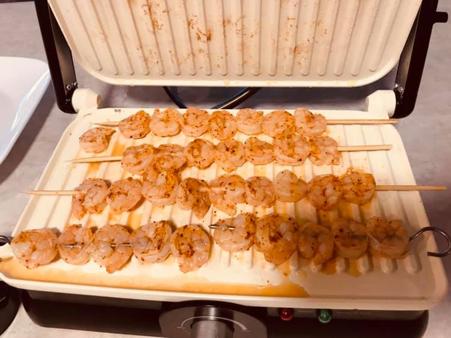

About 1/2 lb large tail on, shell removed shrimp total (7 shrimp per skewer - 2 skewers per person)
1 tbsp butter
1 garlic clove
1/4 tsp smoked paprika
Squeeze 1/2 lemon
Salt and pepper
Mushrooms:
Handfull of button mushrooms
1 tbsp butter
Salt and pepper
Instructions
Combine melted butter, garlic, paprika, lemon, and salt and pepper in a small bowl.
Skewer shrimp (hint: if using bamboo, soaking your skewers in water before skewering will help them to not burn on the grill).
Use a brush to brush the butter mixture onto shrimp and set aside.
Dice mushrooms.
Sautee mushrooms in butter, salt, and pepper to desired texture.
Cook shrimp on grill, offset from direct flame. Shrimp cook quickly so keep a close eye on these. Remove from heat once they turn from white to pink. Shrimp cook best away from direct flame. Alternatively, you can cook these in a panini press or indoor grill.
